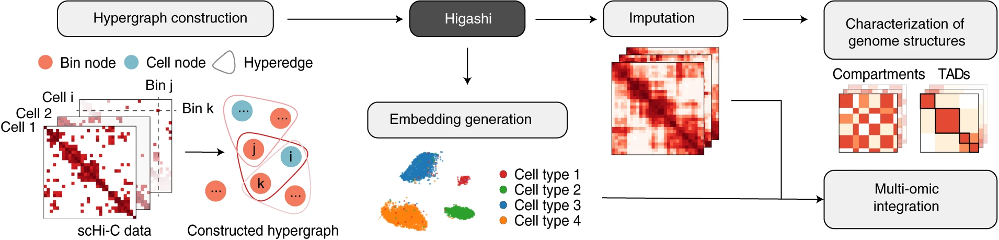

Publications
Note: † denotes equal contribution.

SPICEMIX enables integrative single-cell spatial modeling of cell identity
Chidester B†, Zhou T†, Alam S, Ma J
Nature Genetics. 2023. Impact Factor=41.38
Early version in Proceedings of the 25th Annual Conference on Research in Computational Molecular Biology (RECOMB), 2021.
Ultrafast and interpretable single-cell 3D genome analysis with Fast-Higashi
Zhang R†, Zhou T†, Ma J
Cell System. 2022. Impact Factor=11.09
Early version in Proceedings of the 26th Annual Conference on Research in Computational Molecular Biology (RECOMB), 2022.

The 3D Genome Structure of Single Cells
Zhou T†, Zhang R†, Ma J
Annual Review of Biomedical Data Science. 2021.
ComplexContact: a web server for inter-protein contact prediction using deep learning
Zeng H, Wang S, Zhou T, Zhao F, Li X, Wu Q, Xu J
Nucleic Acids Research. 2018. Impact Factor=19.16

Deep learning reveals many more inter-protein residue-residue contacts than direct coupling analysis
Zhou TM†, Wang S†, Xu J
Proceedings of the 22th Annual Conference on Research in Computational Molecular Biology (RECOMB), 2018.